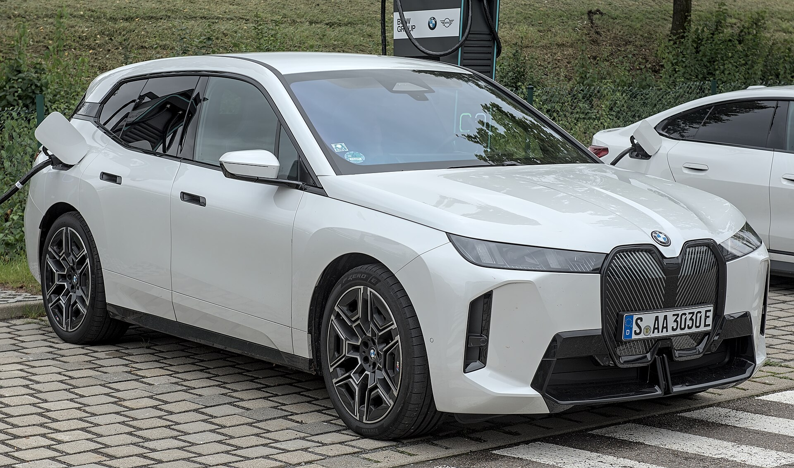

Flagship · SUV
Drive the iX →
The iX xDrive50
Dual motors, 111.5 kWh of battery, and a cabin designed from the inside out — curved display, hexagonal wheel, lounge seats. The flagship went electric first.
523 hpPower
765 NmTorque
4.6 s0–100 km/h
630 kmWLTP up to